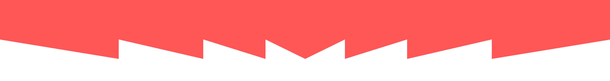

Beast Virus® V2.0
Beast Virus® V2.0 představuje revoluční předtréninkový doplněk, který ti umožní dosáhnout výkonů, o kterých jsi dosud jen snil.
Díky unikátní směsi 13 pečlivě vybraných aktivních látek, včetně nitrátů z červené řepy nebo inosinu, transformuje každý tvůj trénink v nezapomenutelný zážitek plný síly, výdrže a nevídaného prokrvení svalů.

Podívej se na video
Beast Virus® V2.0?
Co najdeš uvnitř?
Beast Virus® V2.0 kombinuje 13 aktivních látek v mega dávkách pro maximální efekt na tvůj výkon.
- L-citrulin-malát – 6000 mg pro lepší výkonnost a svalový pump
- Beta-alanin – 3000 mg pro sílu a výbušnost
- Taurin – 1900 mg pro výdrž a svalovou sílu
- Nitráty z červené řepy – pro lepší prokrvení
- Kofein + L-Tyrosin – pro maximální soustředění

Pro koho je Beast Virus?
Vyzkoušej v kombinaci s M3/S PUMP nebo Nitro Virus
M3/S PUMP je předtréninkový suplement bez stimulantů. Soustředí se na maximální propumpování svalů a v kombinaci s Beast Virus® dělá z kulturistického tréninku opravdový zážitek.
Chci M3/S PUMP!Nitro Virus obsahuje nitráty z červené řepy s 10% obsahem nitrátů (nejvyšší na trhu), díky kterým dochází k lepšímu prokrvení svalu a skvělému napumpování.
Chci Nitro Virus!

Historie Beast Virus®
Zakladatel Patrik Záruba a jeho tým začali testovat unikátní kombinaci látek, která se postupně vyvinula v revoluční recepturu.
Beast Virus® byl první, kdo představil obrovské množství Citrulinu-Malátu (6g) a kyselou příchuť. Zatímco konkurence se spoléhala na Arginin, my jsme nastavili nový benchmark.
Jako jedni z prvních jsme nabídli úplně transparentní složení, umožňující uživatelům vědět přesně, co konzumují. Dnes tento trend přijala většina výrobců v ČR.
S příchodem Beast Virus® V2.0 přidáváme 4 nové látky k osvědčenému mixu. Král předtréninkových suplementů je zpět – silnější a inovativnější než kdykoliv předtím!
Vyber si svou příchuť
Beast Virus® V2.0 je dostupný ve třech výborných příchutích. Všechny varianty mají stejně silné složení.
Kyselé jablko & Malina
Mandarinka
Růžový grep